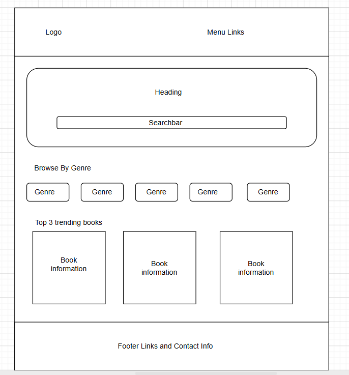
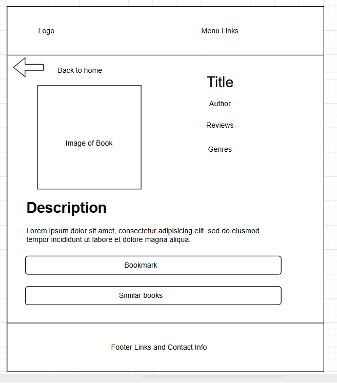
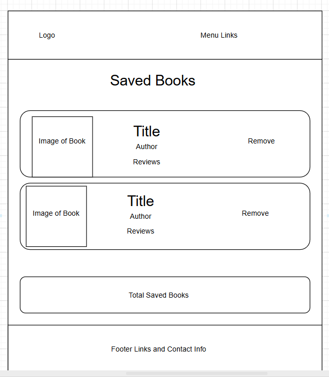

Overview
Purpose
The purpose of this application is to provide personalized book recommendations based on user preferences and page count. Book lovers can input their preferred genre and receive tailored suggestions.
Audience
The audience is book lovers of all ages who are looking for new reads and want to discover books with specific requirements. It is useful for readers who know what type of story they want to read, but need help finding books that match their criteria.
Dynamic elements
JavaScript will be used to make the application interactive by:
- Accepting user search input.
- Sending requests to the an API.
- Retrieving book information dynamically.
- Displaying book covers, titles, authors, and descriptions without reloading the page.
- Filtering and updating search results based on user input.
- Showing error messages when no books are found.
- Saving favorite books using Local Storage.
- Loading saved favorites when the page opens.
Branding
Website Logo
.png)
Style Guide
Color Palette
Palette URL: https://coolors.co/396e94-e7c24f-a43312-381d2a-aabd8c| Primary | Secondary | Accent 1 | Accent 2 |
|---|---|---|---|
| [#19334D] | [#23586A] | [#656492] | [#86769E] |
Pseudocode for your project
Create the HTML pages for the website
Add the header with the logo and navigation
Create sections for:
Search bar
Genre buttons
Book recommendations
Footer
Style the website using CSS
Choose colors and fonts
Make the website responsive for different screen sizes
Create a JavaScript file
Store book information in an array
Display the books on the page
Allow users to search for books
Allow users to filter books by genre
Display the matching books
Allow users to save books to a reading list
Store the reading list using Local Storage
Test all features
Fix any errors
Publish the website to GitHub Pages
Wireframes
Create wireframes for your project page(s). One for each page and list them here.
Home page
The home page might have filters in the search bar to limit the search options a little bit. It will also have a list of recommended books based on the user's preferences and page count. The user can click on a book to view more details or add it to their reading list.

Book Details page
The Book Details page will display the book cover, title, author, description, and a button to add the book to the reading list. It may also include additional information such as publication date, genre, and user reviews.

Reading List page
The Reading List page will show all the books that the user has added to their reading list. Each book will have a cover image, title, author, and a button to remove it from the list. The user can also click on a book to view more details.
